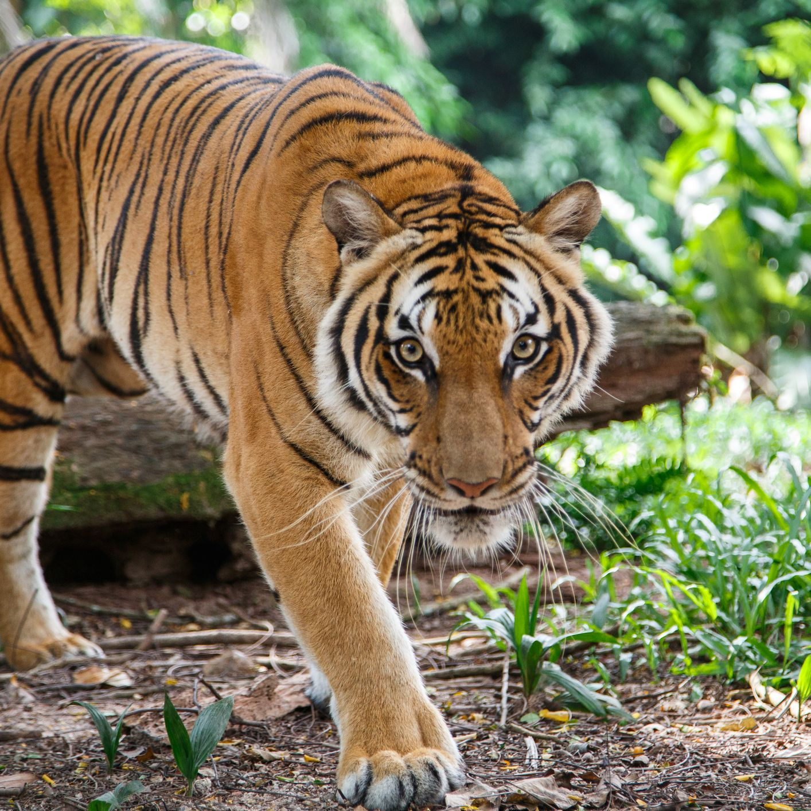

The lion is a large cat of the genus Panthera native to Africa and India. It has a muscular, deep-chested body, short, rounded head, round ears, and a hairy tuft at the end of its tail. Adult male lions are larger than females and have a prominent mane.

The tiger is the largest living cat species and a member of the genus Panthera. It is most recognisable for its dark vertical stripes on orange fur with a white underside. An apex predator, it primarily preys on ungulates such as deer and wild boar.The cheetah is a large cat native to Africa and central Iran. It is the fastest land animal, estimated to be capable of running at 80 to 128 km/h (50 to 80 mph) with the fastest reliably recorded speeds being 93 and 98 km/h (58 and 61 mph), and as such has several adaptations for speed, including a light build, long thin legs and a long tail.A black panther is the melanistic colour variant of the leopard and the jaguar. Black panthers of both species have excess black pigments, but their typical rosettes are also present. They have been documented mostly in tropical forests, with black leopards in Kenya, India, Sri Lanka, Nepal, Thailand, Peninsular Malaysia and Java, and black jaguars of the Americas in Mexico, Panama, Costa Rica and Paraguay.Gorillas are herbivorous, predominantly ground-dwelling great apes that inhabit the tropical forests of equatorial Africa. The genus Gorilla is divided into two species: the eastern gorilla and the western gorilla, and either four or five subspecies. The DNA of gorillas is highly similar to that of humans, from 95 to 99% depending on what is included, and they are the next closest living relatives to humans after chimpanzees and bonobos.The grizzly bear (Ursus arctos horribilis), also known as the North American brown bear or simply grizzly, is a population or subspecies[1] of the brown bear inhabiting North America.The great white shark (Carcharodon carcharias), also known as the white shark, white pointer, or simply great white, is a species of large mackerel shark which can be found in the coastal surface waters of all the major oceans. It is notable for its size, with larger female individuals growing to 6.1 m (20 ft) in length and 1,905–2,268 kg (4,200–5,000 lb) in weight at maturity.The hippopotamus, also called the hippo, common hippopotamus or river hippopotamus, is a large, mostly herbivorous, semiaquatic mammal and ungulate native to sub-Saharan Africa. It is one of only two extant species in the family Hippopotamidae, the other being the pygmy hippopotamus (Choeropsis liberiensis or Hexaprotodon liberiensis). The name comes from the ancient Greek for "river horse".